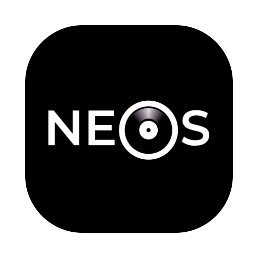
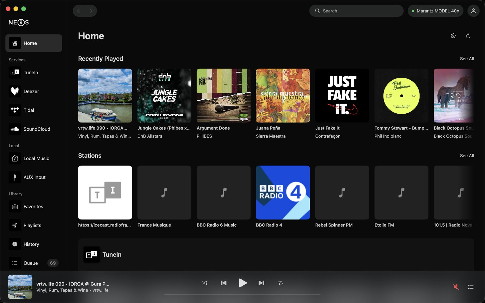
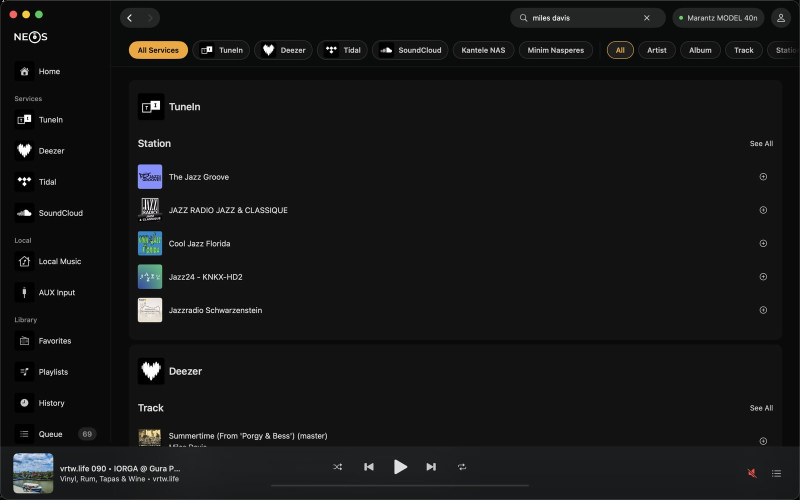
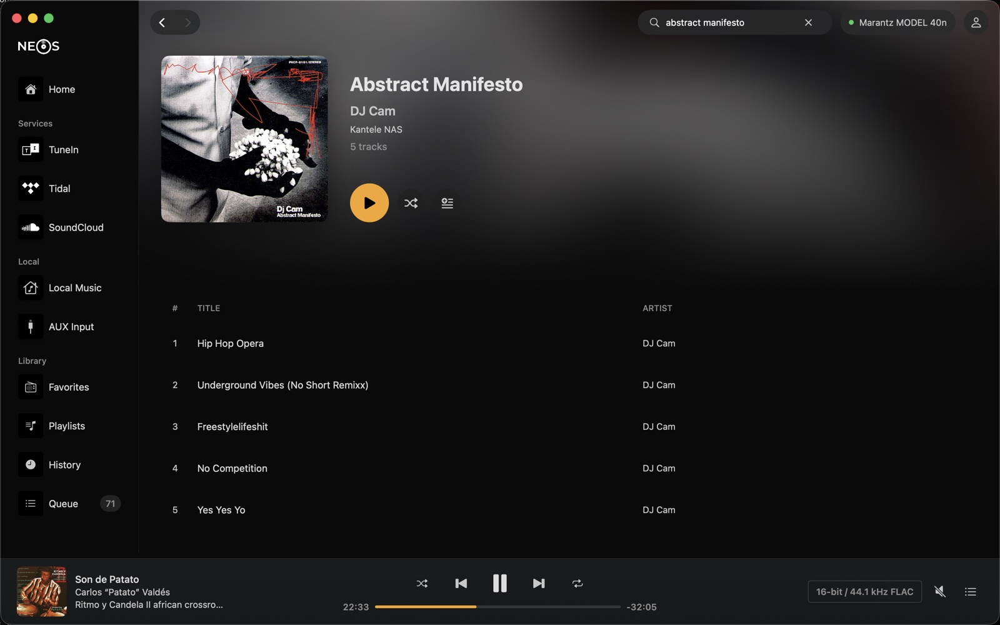
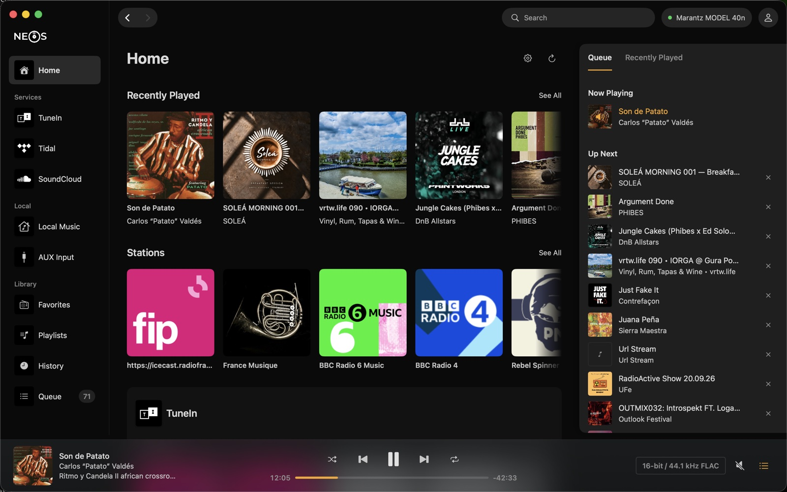
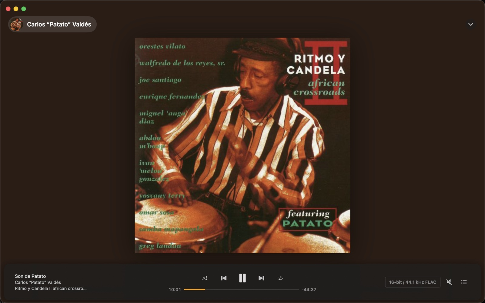
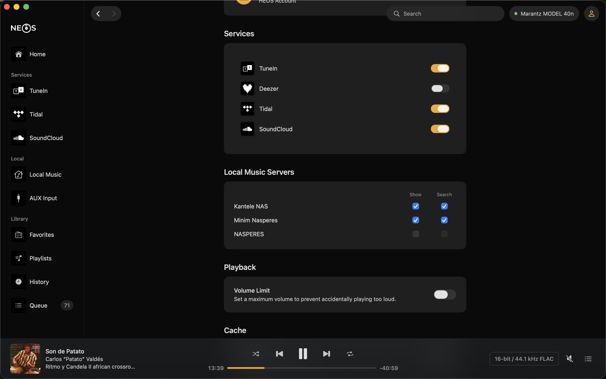
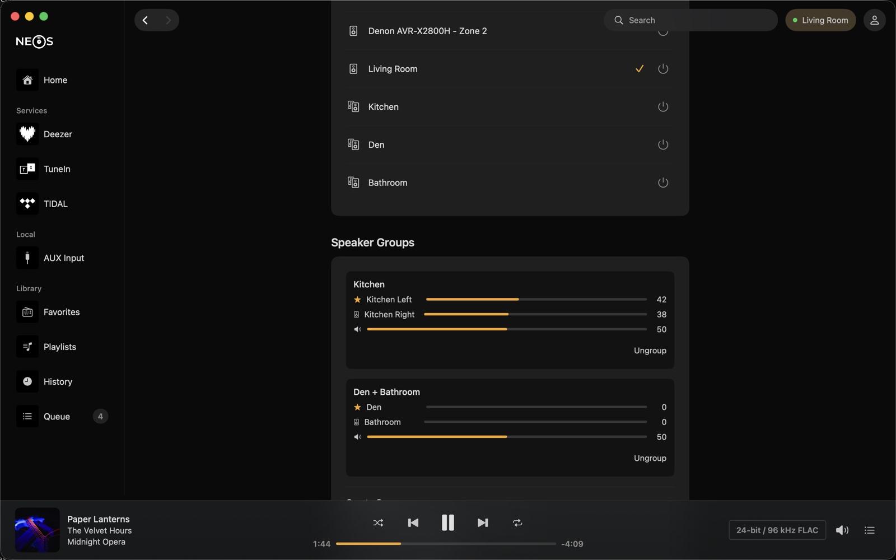

NeosPlay Tidal, Deezer, TuneIn, SoundCloud and the other services linked to your HEOS account, or your own music server, on your Denon or Marantz speakers. Browse your music, manage the queue and control playback without reaching for your phone.
Download for macOS
Switch between your streaming services, your amp's inputs and your local music server without changing apps.
Search all your services at once and filter the results by service, artist, album or track.
Check the bit depth, sample rate and codec reported by your speaker.
Add albums and tracks, remove items or jump to something further down the queue.
Pick which speaker to control, group them and set the volume of each one.
Keep internet radio streams that aren't on TuneIn as stations, with the artwork you choose.
Play, skip tracks and adjust the volume without opening the main window.
Built with SwiftUI. No web wrapper, no account and no tracking.





